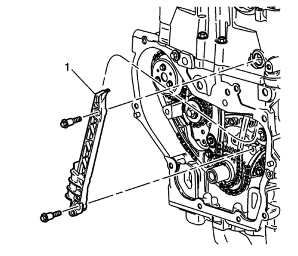

Desmontaje del tensor y la cadena de distribución — LE5, LE9
Herramientas especiales
EN-48953 Herramienta de bloqueo de actuadores de árbol de levas
Si desea informarse sobre herramientas regionales equivalentes, consultar Herramientas especiales .

- Gire el cigüeñal para montar la herramienta de bloqueo EN-48953 (1).
Nota: Es fundamental para los procedimientos de trabajo marcar la cadena y los actuadores. Antes de marcar ambos actuadores y la cadena debe quitarse de la superficie el aceite de los actuadores del árbol de levas y de la cadena de distribución.
- Monte la herramienta de bloqueo EN-48953 en la culata y apriétela a 10 N·m (89 lib. pulg.). Si el actuador del árbol de levas de admisión se mueve de manera independiente de la leva y no está bloqueado, gire a la izquierda el árbol de levas de admisión; la herramienta sujetará el actuador, fijándolo a la leva.
- Afloje el tornillo del actuador del árbol de levas de admisión.
- Afloje el tornillo del actuador del árbol de levas de escape.
- Extraiga la herramienta de bloqueo EN-48953.

- Quite los tornillos de la guía superior de la cadena de distribución.
- Desmonte la guía superior (1) de la cadena de distribución.

Nota: Antes de retirar la cadena de distribución debe desmontarse su tensor para liberar tensión en la cadena.
- Desmonte el émbolo del tensor (1) de la cadena de distribución.
- Localice el hexágono en el árbol de levas de escape y sujételo con una llave (2).
- Quite el perno del árbol de levas de escape y desmonte el actuador del árbol de levas de escape (1). Deseche el tornillo.

- Quite los tornillos de la guía ajustable de la cadena de distribución.
- Desmonte la guía ajustable (1) de la cadena de distribución.
- Quite el tapón (1) para acceder al tornillo de la guía fija de la cadena de distribución.

- Quite los tornillos de la guía fija de la cadena de distribución.
- Desmonte la guía fija (1) de la cadena de distribución.
- Localice el hexágono en el árbol de levas de admisión y sujételo con una llave.
- Retire el tornillo del actuador del árbol de levas de admisión, el actuador (1) y la cadena de distribución (2) a través de la parte superior de la culata. Deseche el tornillo.
Nota:
| • | Las válvulas de escape nº 3 están abiertas. |
| • | Tome nota de la posición y dirección de los árboles de levas antes de desmontarlos. Marque la culata respecto a las muescas de bloqueo antes de desmontar los componentes. |
- Marque la culata donde la muesca de bloqueo (1) del actuador del árbol de levas de escape y la muesca de bloqueo (2) del árbol de levas de admisión se alinean con la culata.

- Retire el piñón del cigüeñal (2) y las arandelas de fricción (1), si hubiera.

- Quite el tornillo de la tobera de aceite de la cadena de distribución.
- Desmonte la tobera de aceite (1) de la cadena de distribución.
| © Copyright Chevrolet Europe. All rights reserved |